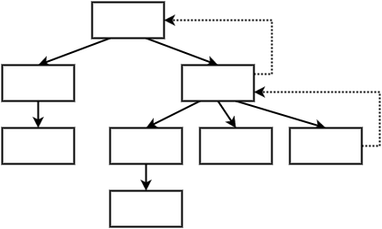

Angular

Objectifs de cette présentation
Formation- AngularJS << Angular
- Back-dev'

Résumé (très) rapide
- Framework MVC
-
Extension du HTML
- {{it}}
Son cousin AngularJS
-
Philosophie d'AngularJS conservée :
- directives
- services
- filtre (pipe)
- modules
- ...
Ambitions d'Angular
Pourquoi "tout" changer ?
Performance
Par rapport à AngularJS
- Render : 2,5 fois plus rapide au démarrage
- Rerender : 4,2 fois plus rapide lors de l'utilisation
- Permanent : 5 fois plus rapide tout le temps
- Web workers : 2 fois plus rapides
Futur du web
-
Modulaire
- ES6
- TypeScript
-
Webcomponent
- custom element
- import
- shadow DOM
Multi-plateformes
- AngularJS étant principalement "web desktop"
-
Angular
- Web
- Desktop : Electron
-
Mobile
- Mobile web : Ionic 2
- Mobile natif : NativeScript
Mais encore ?
- Moins compliqué
- Plus complet
TypeScript

Qu'est-ce que TypeScript ?
- Transpilation
- Date de première version : 9 février 2012
- Influencé par : JavaScript, C#, Java
- Développeur : Microsoft
- Licence : libre et open-source
-
Avantages :
- Typage statique
- Annotations
Encore un nouveau langage à apprendre ?
Pourquoi il faut choisir TypeScript
@CanSpeak('Hello world!')
class Person {
private name: string;
constructor(name: string) {
this.name = name;
}
introduceYourself(): void {
console.log('My name is ' + this.name);
}
}
let p: Person = new Person('Kevin');
p.introduceYourself(); // My name is Kevin(<any> p).speak(); // Hello world!La syntaxe
ECMAScript 5
var Person = (function () {
function Person(name) {
this.name = name;
}
Person.prototype.introduceYourself = function () {
console.log('My name is ' + this.name);
};
return Person;
}());
var p = new Person('Kevin');
p.introduceYourself(); // My name is KevinQui a compris ?
La syntaxe
ECMAScript 6
class Person {
constructor(name) {
this.name = name;
}
introduceYourself() {
console.log('My name is ' + this.name);
}
}
let p = new Person('Kevin');
p.introduceYourself(); // My name is KevinHeu, c'est pareil non ?
Le typage
-
Facultatif : type
anylet p1: any = new Person('Kevin'); let p2 = new Person('Kevin'); - Contrainte, mais sécurité !
Les annotations
-
TypeScript :
@CanSpeak('Hello world!') class Person {} // p.speak();function CanSpeak(message: string) { return function(target: Function) { target.prototype.speak = () => console.log(message); } } -
JavaScript :
CanSpeak('Hello world!')(Person); - ECMAScript 2016 : décorateur
Ok, TypeScript c'est cool !
Angular & Observable
la programmation réactive
La programmation réactive est un paradigme de programmation visant à conserver une cohérence d'ensemble en propageant les modifications d'une source réactive (modification d'une variable, entrée utilisateur, etc.) aux éléments dépendants de cette source.
Wikipedia
- Patron : Observateur
-
Utilisation :
- Asynchrone
- Databinding
Les promises
ES5
let promise = new Promise(
(resolve, reject) => {
// ...
resolve('Success...');
//reject('Fail...');
}
);promise.then( // Ok
(val) => console.log(val)
).catch( // Error
(err) => console.error(err)
);ReactiveX : RxJS
Bibliothèque externe
import {EventEmitter} from '@angular/core';
import {Observable} from "rxjs";let observable: EventEmitter<string> = new EventEmitter<string>();observable.subscribe(
(val: string) => console.log(val),
(err: any) => console.error(err)
);observable.emit('Success...');
//observable.error('Fail...');Pourquoi ?
- Gestion de multiples événements
- Annulable
- Stream : map/filter/reduce
- Support de
Promise
Communauté


Angular
En bref
- Complie
- Change : détection côté DOM ou contrôleur (DataBinding)
- Render
- Dependency Injection
- Zones : bibiothèque séparée, développée par Angular, utilisée pour les opérations asynchrones
- Rerender : génération de vue côté serveur
- Mobile : tactile, bibliothèques intégrées
- Component : bibliothèques (Material 2)
- Debug : notamment grâce à Zone
- CLI : développement rapide :
- Intellisense : Sublime, WebStorm, Visual Studio Code
- I18n
- Animate
- Router
- ngUpgrade / ngForgrade
Types de "modules"
- Service
- Pipe
- Directive
- Component
Les services
-
Fournisseur de fonctionnalités :
- Code métier
- Appel de webservice
- Découpage vue/service
- Utilisé par les composants finaux
AngularJS...
Service vs Factory vs Provider
angular.module('foo')
.service('myService', ['otherService', function(otherService) {
this.doSomething = function (arg) { /*...*/ }
}]);angular.module('foo')
.factory('myService', ['otherService', function(otherService) {
return {
doSomething: function (arg) { /*...*/ }
};
}]);angular.module('foo')
.provider('myService', ['otherService', function(otherService) {
this.$get = function () {
return ...
}
}]);Qui a compris ?
Angular !
POO = classe + méthodes (+ attributs)
import { Injectable } from '@angular/core';
import { OtherService } from '...';
@Injectable()
class MyService {
constructor(otherService: OtherService) {
// configuration
}
doSomething(arg) {
// ...
}
}Les pipes
Transformation de données
{{'toto' | upper}}AngularJS...
Nommé "filtre"
angular.module('foo', [])
.filter('upper', function() {
return function(value, arg1, arg2) {
return value.toUpperCase();
};
});Angular !
-
POO : interface & polymorphisme
interface PipeTransform { transform(value: any, ...args: any[]): any; } -
Implémentation
import { Pipe, PipeTransform } from '@angular/core'; @Pipe({ name: 'upper' }) class UpperPipe implements PipeTransform { transform(value: string): string { return value.toUpperCase(); } }
Les directives
- Attribut personnalisé
- Modifier le DOM
I'm flashing...

AngularJS...
angular.module('foo', [])
.directive('flashing', function() {
return {
restrict: 'A',
link: function(scope, element, attributes) {
var i = 0;
var initialColor = this.element.style.backgroundColor;
window.setInterval(
function() {
var color = (i%2==0 ? 'yellow' : 'none');
element.css({ backgroundColor: color });
i = i+1;
}, 1000
);
}
};
});Angular !
import { Directive, ElementRef } from '@angular/core';
@Directive({ selector: '[flashing]' })
export class FlashingDirective {
constructor(element: ElementRef) {
let i: number = 0;
let initialColor: string = element.nativeElement.style.backgroundColor;
window.setInterval(
() => {
let color: string = (i%2==0 ? 'yellow' : initialColor);
element.nativeElement.style.backgroundColor = color;
i = i+1;
}, 1000
);
}
}Angular !!!
import { Directive, ElementRef } from '@angular/core';
@Directive({ selector: '[flashing]' })
export class FlashingDirective {
private i: number = 0;
private initialColor: string;
constructor(private element: ElementRef) {
this.initialColor = this.element.nativeElement.style.backgroundColor;
window.setInterval(
() => {
this.changeColor();
i = i+1;
}, 1000
);
}
private changeColor(): void {
let color: string = (i%2==0 ? 'yellow' : this.initialColor);
this.element.nativeElement.style.backgroundColor = color;
}
}Les composants
- Directive + Template
- Web component
En bref
import { Component } from '@angular/core';
@Component({
selector: 'say-hello',
template: 'Hello world!'
})
class HelloComponent {
// properties & methods
}class: contrôleurtemplate: vue
Et en JavaScript ?
(function(app) {
app.AppComponent = ng.core
.Component({
selector: 'say-hello',
template: 'Hello world!'
})
.Class({
constructor: function() {}
});
})(window.app || (window.app = {}));Databinding
- Lien vue ↔ contrôleur
- AngularJS : n'est plus automatiquement bi-directionnel
-
Syntaxe :
{{expression}}<comp [attr]="expression"><comp (attr)="handler"><comp [(attr)]="property">
Databinding
@Component({
selector: 'my-app',
template: `
{{count}}
`
})
export class AppComponent {
name: string = 'Julien';
count: number = 42;
handler(): void {
this.count ++;
}
}
Penser "réutilisable"
Hiérarchie du DOM
Pattern composite

Exemple de la racine de l'application
@Component({
selector: 'my-app',
template: `
Programmation orientée composant

-
Paramètres
-
Entrée
- Valeur
- Composants fils
- Sortie : événement
-
Entrée
-
100% indépendant / isolé
- Style CSS
- Contrôleur : propriétés, methodes
La communiation
Les paramètres ?
Les tests ?
Et l'avenir
TODO les versions régulièresInconvénients
-
Setup du projet
- QuickStart
- CLI
- Coupure avec AngularJS
Migration de AngularJS
- Possible
- Module
@angular/upgrade - Propre ? Facile ?
-
Facilitations :
- Approche composant
- TypeScript
- Module loader (SystemJS, Webpack)
-
Adapteurs :
ngForward: exécuter du code Angular dans une application AngularJS (communautaire)ngUpgrade: coexister les 2 frameworks (Google)
- Coupure avec AngularJS